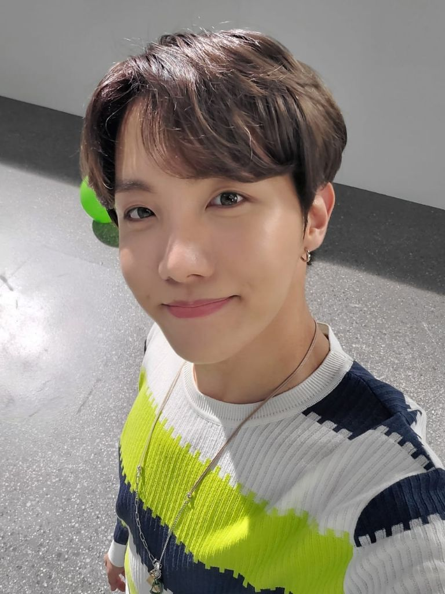

jung ho-seok

Nombre Real: Jung Ho Seok (정호석)
Apodos: Hope, Sonrisa Hoya, Caballo
Profesión: Rapero, Bailarín, Compositor, Coreógrafo y MC
Fecha de nacimiento: 18-Febrero-1994 (25 Años)
Lugar de nacimiento: Kwangju, Corea del Sur
Estatura: 177cm
Peso: 59kg
Tipo de sangre: A
Signo Zodiacal: Acuario
Signo chino: Perro
Posición: Rapero y Bailarín


Kim tae-hyung
Min Yoon-gi
Park Jimin


Kim Seok-jin
Jeon Jung-kook
Jung Ho-seok

Kim Nam-joon